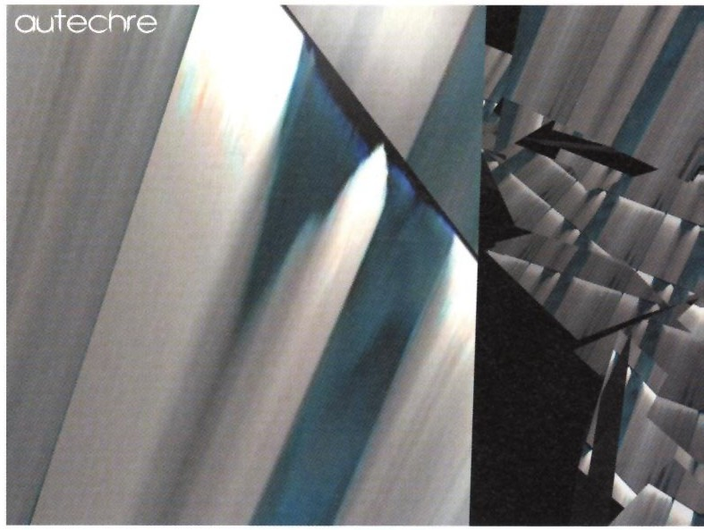
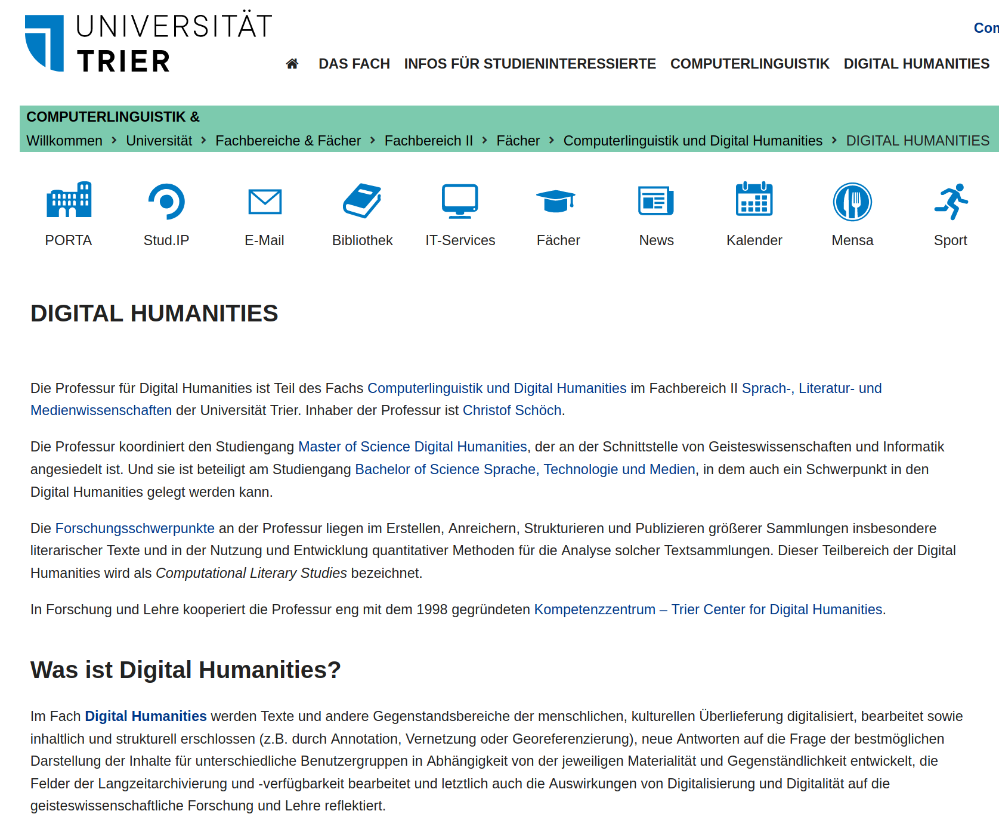
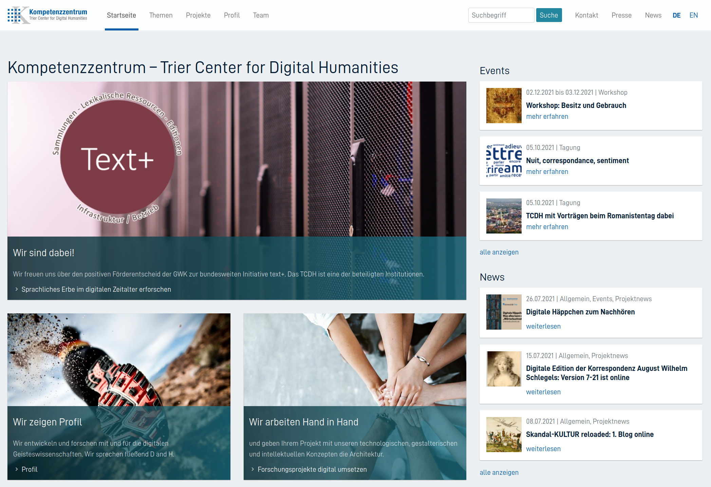
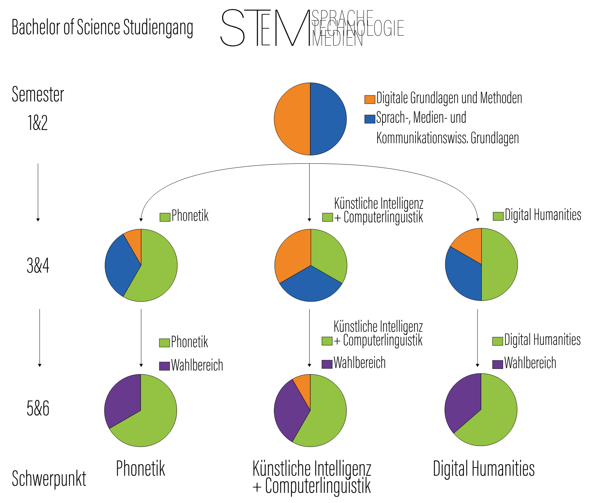
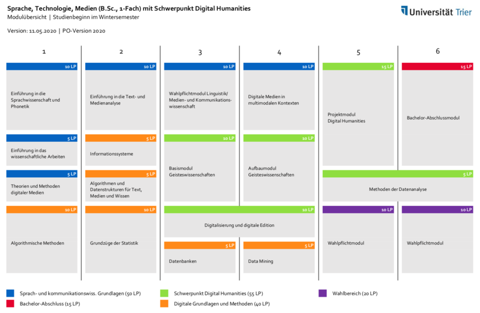

#### Bachelor of Science:<br/>Sprache, Technologie und Medien,<br/><br/><strong>Schwerpunkt 'Digital Humanities'</strong> <br/> <hr/> <br/> <p><strong>Computerlinguistik und Digital Humanities<br/>Fachbereich II, Universität Trier</strong> <br/> <br/><a href="https://dh.uni-trier.de/">dh.uni-trier.de</a> <hr/> <img height="70" data-src="img/basics/uni-trier.png"> -- ## Was ist Digital Humanities? --- #### Sphärenmodell <p><img height="500" data-src="img/sahle-sphären.png"></img></p> <p>(Patrick Sahle 2013)</p> --- #### Forschungsfragen und Aufgaben <img height="180" data-src="img/harrypotter.jpg"></img> <img height="180" data-src="img/scs-zell-0001.jpeg"></img> * Hat Harry-Potter-Autorin Joanne K. Rowling auch den Roman "A Cuckoo's Calling" geschrieben? <!-- .element: class="fragment" data-fragment-index="1" --> * Gibt es bei Musikalben einen automatisch erkennbaren Zusammenhang zwischen Coverart und Musikrichtung? <!-- .element: class="fragment" data-fragment-index="3" --> * Was erzählt uns eine große Sammlung von Weinetiketten über die Geschichte von Weinbau und Weinwirtschaft in der Moselregion? <!-- .element: class="fragment" data-fragment-index="4" --> * ... Und viele mehr! <!-- .element: class="fragment" data-fragment-index="4" --> --- #### Definition bei Wikipedia <p><img height="500" data-src="img/wikipedia_digital-humanities-DE.png"></img></p> <p>Siehe auch: <a href="http://whatisdigitalhumanities.com/">whatisdigitalhumanities.com</a></p> --- #### Anwendung und Entwicklung * Digitalisierung von Kulturgut * Erschließung / Edition * Datenanalyse / Machine Learning * Visualisierung von Ergebnissen * Online-Publikation <br/> <br/> <p>Siehe auch, Beispiel-Projekte in Trier:<br/><a href="https://dh-trier.github.io/dh-in-trier/#/">https://dh-trier.github.io/dh-in-trier/#/.</a></p> -- ## Vorstellung des Teams --- #### Digital Humanities @ Trier   <br/>Professur für Digital Humanities Trier Center for Digital Humanities <br/> <br/><a href="https://dh.uni-trier.de">dh.uni-trier.de</a> <a href="https://tcdh.uni-trier.de">tcdh.uni-trier.de</a> --- #### Lehrende in den DH </img> </img> </img> </img> </img> </img> </img> <br/> * Prof. Dr. Christof Schöch * JProf. Dr. Susanne Kabatnik * Silvia Carlitz, M.A. (Sekretariat) * Ariadne Baresch, M.A. (Studienberatung) * Dr. Élodie Ripoll (an der Professur) * Dr. Joelle Weis (am TCDH) * Dr. Claudia Bamberg (am TCDH) * Dr. Thomas Burch (am TCDH) -- ## Vorstellung des Bachelor-Studiengangs --- #### STeM mit 3 Tracks <a href="img/STeM.png"></a> --- #### STeM in der Übersicht * "Sprache, Technologie und Medien" (STeM) * Bachelor of Science * Drei Tracks: Computerlinguistik/KI, Digital Humanities, Phonetik * Informationen: https://www.uni-trier.de/index.php?id=73536 --- #### STeM mit DH-Track <a href="img/STeM-DH_Modulübersicht.png"></a> --- #### Modulbereiche im Überblick <br/> <small> | Modulbereich | FS | LP | |----------------------------------------------------------------------|:---:|:--:| | Sprach- und kommunikationswissenschaftliche Grundlagen (gemeinsam) | 1-4 | 50 | | <mark>Digitale Grundlagen und Methoden (je nach Schwerpunkt)</mark> | <mark>1-4</mark> | <mark>40</mark> | | <mark>Module des Schwerpunkts Digital Humanities (Schwerpunkt)</mark>| <mark>3-6</mark> | <mark>55</mark> | | Wahlpflichtbereich mit Modulen aus den Informatikwissenschaften | 5-6 | 20 | | Bachelorabschlussmodlul: Bachelorarbeit | 6 | 15 | </small> --- #### Modulbereich Digitale Grundlagen und Methoden * Gemeinsames Programm (FS 1-2) * Modul Algorithmische Methoden * Modul Informationssysteme * Modul Algorithmen und Datenstrukturen für Text, Medien und Wissen * Grundzüge der Statistik<br/><br/> * DH-spezifisches Programm (FS 3-4) * Modul Datenbanken * Modul Data Mining --- #### Schwerpunkt DH: 5 Module <br/> <small> | Modul | FS | SWS | LP | Seminare | |----------------------------------------|:---:|:---:|:--:|--------------------------------------------------------------| | Digitalisierung und Digitale Edition | 3-4 | 4 | 10 | - Digitalisierung von Kulturgut<br/>- Digitale Edition | | Methoden der Datenanalyse | 5-6 | 4 | 10 | - Aktuelle Themen der DH<br/>- Quantitative Analysemethoden | | Projektmodul Digital Humanities | 5 | 1 | 15 | - Begleitseminar zur Projektarbeit<br/>- Projektarbeit | | Basismodul Geisteswissenschaften | 3 | 4 | 10 | Einführende Veranstaltungen aus einem gw. Fach | | Aufbaumodul Geisteswissenschaften | 4 | 4 | 10 | Weiterführende Veranstaltungen aus einem gw. Fach | </small> --- #### Kommunikation <br/> <br/> <strong>DH-Chat (Telegram)</strong> <br/> </img> -- # Vielen Dank! <br/> <br/> #### <strong>TCDH</strong><br/> Web: <a href="https://tcdh.uni-trier.de">tcdh.uni-trier.de</a> <br/> <a href="https://fedihum.org/@tcdh">Mastodon: @tcdh</a> <br/> #### <strong>DH-Professur</strong> <br/> Web: <a href="https://dh.uni-trier.de/">dh.uni-trier.de</a> <br/> <a href="https://fedihum.org/@christof">Mastodon: @christof</a>